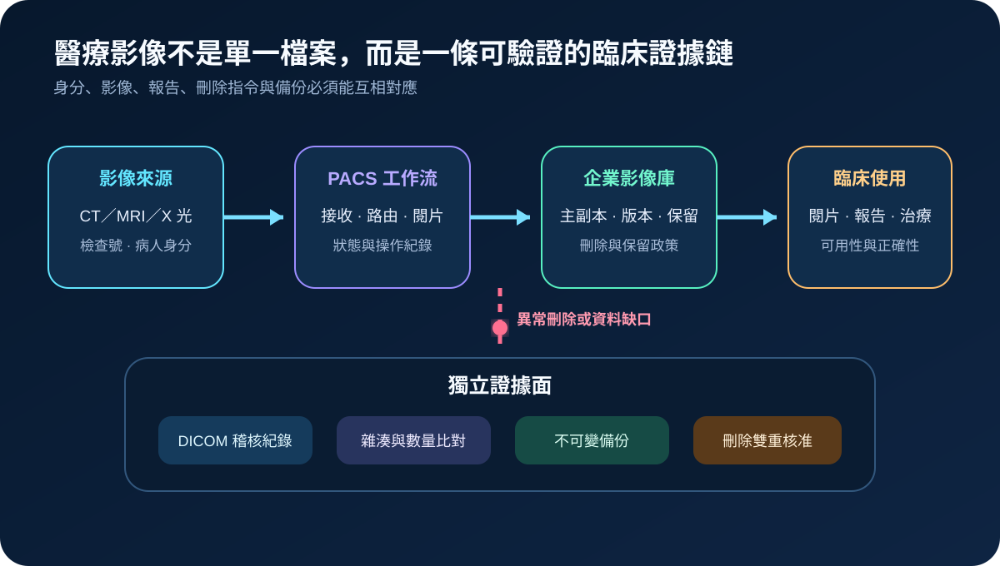
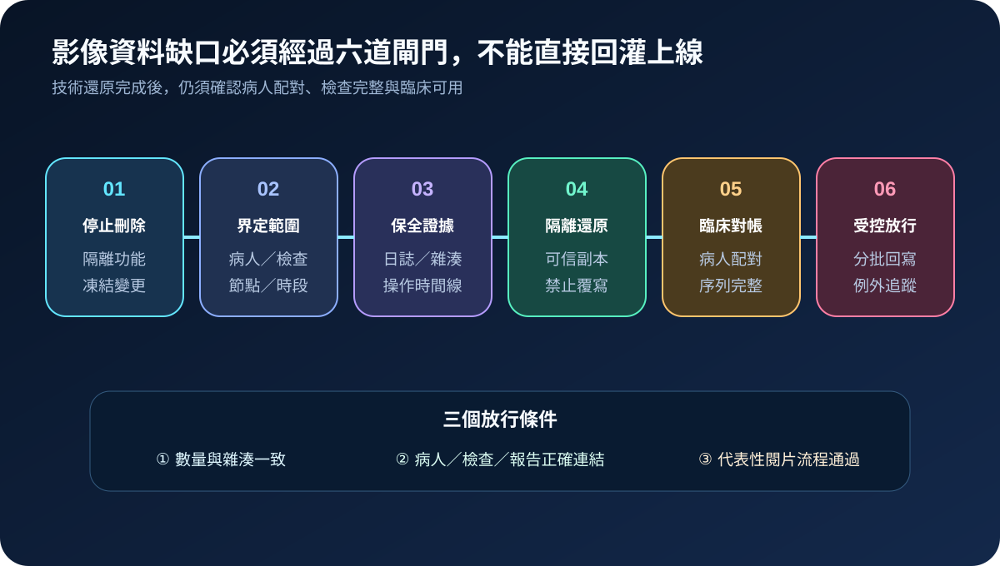
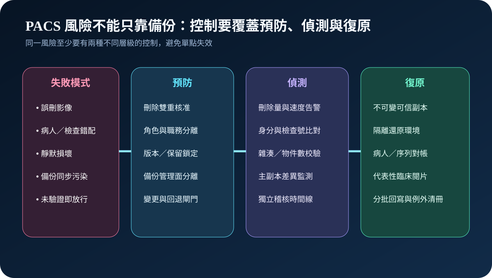

醫療資安國際觀察 · 2026-11-06
醫療影像系統遭錯誤清除後如何恢復可信：從病人配對到影像完整性
作者：Dr. William｜醫療資訊與資安治理實務工作者
PACS 的資料完整性不只要求影像檔案存在，還要證明影像屬於正確病人、正確檢查與完整序列，並能安全連回報告與臨床決策。
名詞解釋：PACS、資料完整性與臨床放行
PACS是影像擷取、傳輸、儲存與閱片的系統組合。資料完整性包含內容未遭未授權變更、病人與檢查關聯正確、物件數量完整及操作可追溯。臨床放行是還原後經技術校驗與代表性閱片確認，才允許影像回到正式流程。
國際現況與適用邊界
美國 FDA 於 2026 年 2 月更新醫療設備資安指引，將資安風險管理、威脅模型、安全架構、事件偵測與復原證據納入產品生命週期品質活動。NIST SP 1800-24 將 PACS 視為跨影像設備、網路、儲存與臨床工作站的生態系，示範存取控制、網路分區、完整性監測及日誌等控制；SP 1800-11 則補充破壞性事件下的資料完整性偵測、回應與復原方法。這些資料共同顯示，影像治理不能只確認系統可開機，還必須驗證物件、病人關聯與臨床流程。
台灣適用原則：FDA 指引與 NIST 實作指南不是台灣醫療機構的法定義務，也不表示所有 PACS 都屬醫療器材或適用相同監管範圍。台灣機構可將其轉為刪除權限、資料保留、備份隔離、臨床對帳與復原驗收的技術參考；實際處置仍依產品核准用途、院內架構、廠商契約、主管機關要求與臨床程序判定。
規劃：把影像物件、病人關聯與刪除能力一起盤點
範圍應涵蓋影像設備、DICOM 路由、PACS、VNA、閱片工作站、報告系統、備份及第三方維護。清冊至少連結病人識別、檢查號、影像序列、主副本位置、保留期限、刪除角色與稽核來源。角色包括放射科、臨床單位、醫療資訊、生醫、資安及供應商。驗收指標可包含高風險刪除雙重核准率、主副本差異告警時間、備份還原成功率、病人與檢查配對正確率、缺失序列關閉時間及代表性閱片通過率。
實作：從停止刪除到受控放行
- 停止：停用異常功能、隔離相關節點並凍結非必要變更。
- 定界：依病人、檢查、節點、使用者與時段界定缺口。
- 保全：保存應用程式、儲存、DICOM、身分與管理日誌，建立操作時間線。
- 還原：從可信副本進入隔離環境，先比對物件數、雜湊、時間與序列。
- 對帳：確認病人、檢查、影像序列與報告關聯，缺件或衝突進入例外清冊。
- 放行：以代表性閱片、查詢、報告與跨系統流程分批驗收，再受控回寫正式環境。

風險：影像回來，不等於資料已可信
常見失敗包括一般帳號可大量刪除、主副本與備份共用管理權、同步刪除污染備份、只看檔案數而未驗證病人關聯，以及直接把還原資料覆寫正式庫。控制方式是高風險操作雙重核准、管理權分離、不可變副本、刪除量與差異監測、DICOM 稽核、隔離還原、臨床對帳及分批放行。

可執行清單
- 哪些角色可以刪除單張、整個序列或完整檢查？
- 大量刪除是否需要雙重核准並產生即時告警？
- 主儲存、企業影像庫與備份是否分離管理權？
- 是否能依病人、檢查、序列及時段快速界定資料缺口？
- 還原演練是否驗證雜湊、數量、病人配對、報告關聯與閱片？
- 未完成對帳的影像是否維持隔離並列入例外追蹤？
來源
- U.S. FDA｜Cybersecurity in Medical Devices: Quality Management System Considerations and Content of Premarket Submissions（更新：2026-02-03；查閱：2026-11-06）
- NIST NCCoE｜SP 1800-24: Securing Picture Archiving and Communication System（發布：2020-12-15；查閱：2026-11-06）
- NIST NCCoE｜SP 1800-11: Data Integrity—Recovering from Ransomware and Other Destructive Events（發布：2020-09-08；查閱：2026-11-06）
內容說明
本文依健康台灣深耕計畫相關治理內容整理，並參考 FDA 醫療設備資安指引與 NIST PACS、資料完整性實作指南，說明影像刪除控制、事件定界、隔離還原、臨床對帳與放行證據；不把美國監管文件或技術指南視為台灣法定要求，也不取代產品核准內容、廠商程序、主管機關規範、院內臨床程序與法律意見。